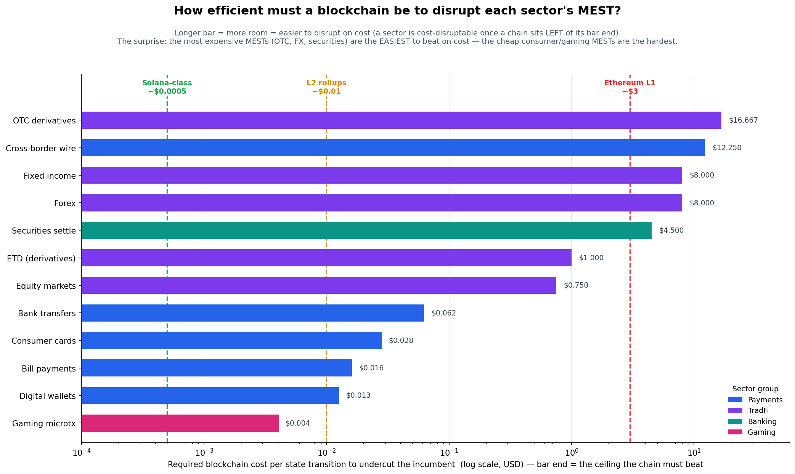

Measuring every financial transaction on Earth
Every transaction triggers a cascade of bilateral state changes. A single card swipe generates ~7 MESTs: authorization, clearing, interchange, settlement on both sides, merchant credit, and statement update. MEST measures what the financial system actually processes.
28 categories ranked by throughput. Click column headers to sort. Filter by sector.
| # | Category | TPS ▼ | Txns/yr | Sector | Confidence | Data age | MEST Mult | MEST/s |
|---|
Data age shows the vintage of each estimate. Every category above is a period-2024 annual estimate — no live feed exists for these systems, which is the whole point. Compare these as of 2024 badges with the seconds ago ledger feeds in the top ticker. TradFi reports itself in quarters and estimates; open ledgers report themselves in seconds. Click any category name to open its full report — sources, calcs, and methodology. Browse the research library and data sources.
How measurable is each system — at all? Scored 0–100 (higher = darker) on a published, versioned rubric. This is not the confidence score: confidence is how sure we are of our estimate; opacity is how measurable the system is in the first place.
| # | Category | Opacity (0–100) | Score | Justification |
|---|---|---|---|---|
| loading opacity index… | ||||
Every score is arguable from the rubric and its cited source — challenge one via PR with public, citable evidence. Rubric v1.0 · CC BY 4.0.
One shared, log-scaled TPS axis. On the left, systems that report every transaction — in seconds (open ledgers) or on a lag (published rails). On the right, the estimated majority, last refreshed in 2024. Same axis, so the magnitudes are directly comparable — and so is the freshness gap.
Estimated column shows the largest categories; the full set is in the leaderboard. A Bitcoin bar that updated seconds ago sits on the same axis as a card-network bar as of 2024. That is the whole point.
Every asset, right, and record that can be represented as a token on a ledger. The full universe of what DLT can address.
Current RWA tokenization (~$20B) vs Total Tokenizable Resources (~$867T)
$20B of $867T — the opportunity is almost entirely untapped
One card purchase. Seven bilateral state changes. Step through the cascade.
Tap. Approved. But behind the scenes, 7 state transitions fire across 5 institutions.
If every category shifted to DLT-native infrastructure, 63% of bilateral state changes disappear. Here's where the compression comes from.
The cost a chain must beat per state transition. The surprise: the most expensive MESTs (OTC, FX, securities) are the easiest to disrupt on cost — the cheap consumer & gaming MESTs are the hardest.

Cost rises with a MEST's irreversibility, mutuality, and oversight — a securities state transition costs ~1000× a gaming one. Full write-up, the cost-per-MEST-by-type table, and the cost-vs-moat frontier that shows why the cost-easy sectors stay un-disrupted: Cost of MEST by Sector →
Sector composition and historical growth.
Six economies that shape global transaction throughput.
What the data tells us about how the world moves money.
Where human investigators should look next.
This research was produced by AI agents operating within public data. Agents can triangulate published statistics, apply forensic proxy methods, and estimate from observable shadows — but they cannot make phone calls, file FOIA requests, conduct interviews, attend conferences, or access paywalled databases. The hypotheses below identify specific questions where human investigation would yield disproportionate insight — places where a forensic accountant with a Bloomberg terminal, a central bank economist with PBOC contacts, or an academic with survey access could move the needle in ways an agent never will.